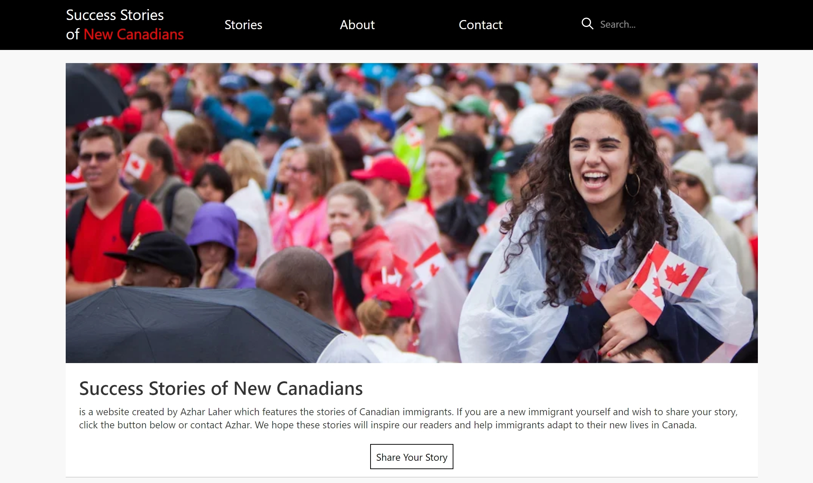
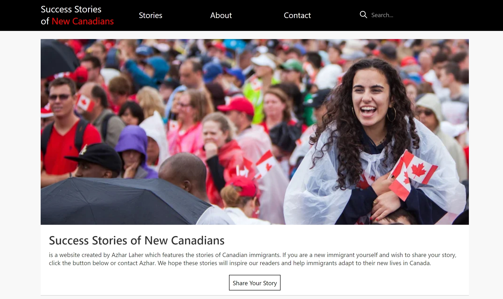
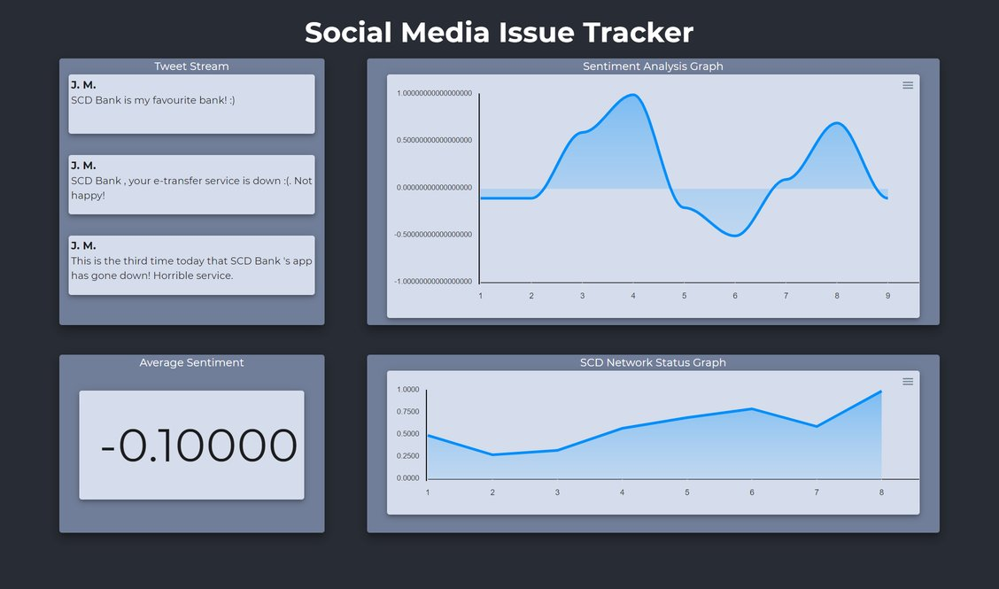
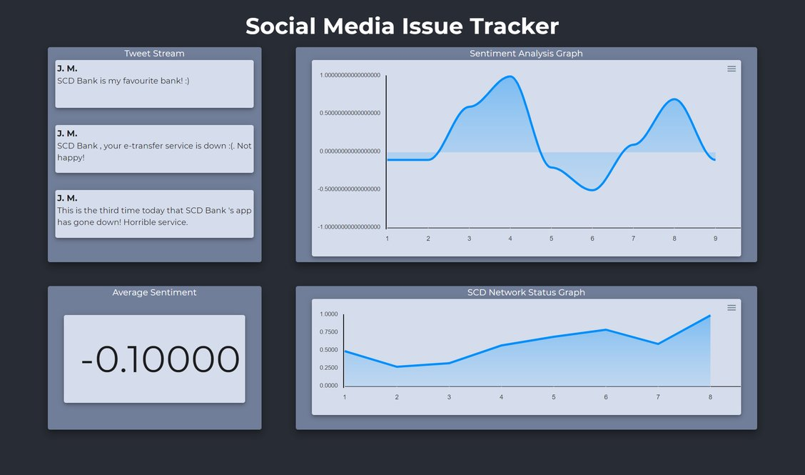

Success Stories of New Canadians
Javascript, ReactJS, Gatsby, GraphQL, Netlify, Netlify CMS ElasticSearch, Git
Success Stories of New Canadians was a project done in collaboration
with a local college professor and two peers. The website was designed to
give the professor a simple way to showcase stories of successful immigrants to Canada,
and let users easily read these stories.

Success Stories of New Canadians was a project done in collaboration
with a local college professor and two peers. The website was designed to
give the professor a simple way to showcase stories of successful immigrants to Canada,
and let users easily read these stories.

SCD Issue Tracker
Javascript, Python, ReactJS, Flask, Natural Language Processing, Google Cloud,
Bootstrap
'SCD' Issue Tracker was a project done at CuHacking 2020.
It was intended to be a dashboard for social media managers to
see a real-time view of sentiment towards their company on social media
as well allowing admins to track if this sentiment has a correlation
with the status of their system.

'SCD' Issue Tracker was a project done at CuHacking 2020.
It was intended to be a dashboard for social media managers to
see a real-time view of sentiment towards their company on social media
as well allowing admins to track if this sentiment has a correlation
with the status of their system.
